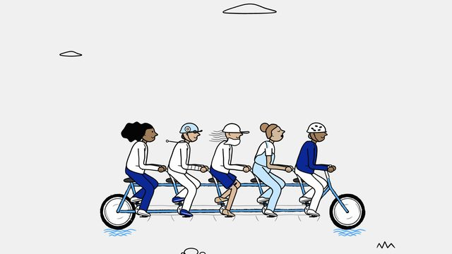

미러볼 아래 다리 달린 파란 폴더가 풍선을 차자 화면이 옆으로 밀려 서류가 드러나고, 둘이 따로 춤추다 다가가 손을 잡으면 하트 풍선이 떠오른다.

혼자 달리던 자전거에 한 명씩 끼어들 때마다 자전거가 한 칸씩 길어져 5인승 탠덤이 되고, 마지막에 다 같이 손을 놓고 몸을 젖히며 모자 하나가 뒤로 날아간다.

검은 화면에 초록 눈 한 쌍이 떠서 좌우를 살피고 깜빡이다가, 눈이 작아지는 순간 밝은 화면으로 컷하면 그 눈은 건물 창가에서 쌍안경을 든 사람이었다.